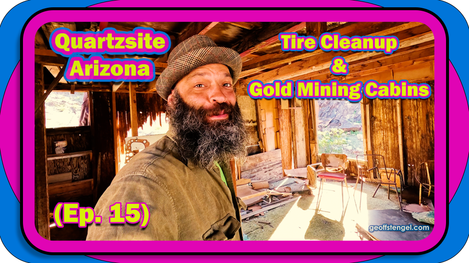
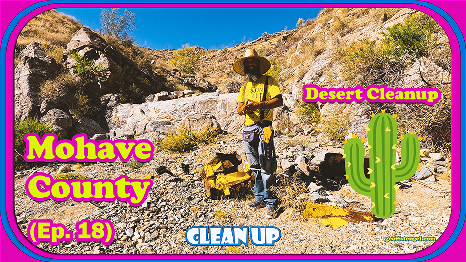
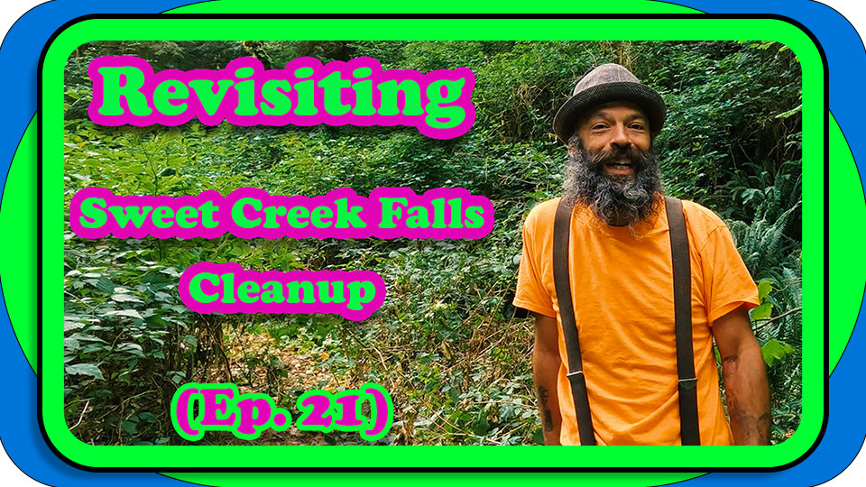
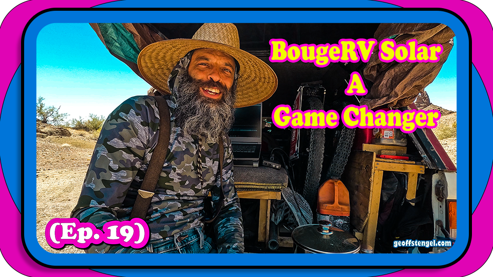

Tire Cleanups🛞
To Restore And Save Habitats

🛞 2024 Recycling of Old Tires from the waterways went great this yr! Was off to a good Solid start with the first cleanup in Twin lakes Colorado 2023. It really sparked such a creative way to spend some time while doing good for the community & nature.
If you look at it from the perspective of the animals we really saved a lot of lives!! All the chemicals that old tires leach into the waterways needed to be removed for everybody's sake really, so it didn't cause further damage. Each tire that's removed the animals say Thank You as they watch eagerly while am working.
- 1. Twin Lakes, CO
- 2. Mapleton, OR
- 3. Cave Junction, OR
- 4. Quartzsite, AZ
- 5. Mojave, AZ
- 6. Mapleton, OR
⛏️ Cleaned up Locations 🏕️

The fun part about each of these locations was the vast change in each environment!! From the coldest mts to the hottest deserts we cleaned up tires. i say we a lot because y'all are on the adventures as well!! Which wanting to thank everybody for the support & encouragement along the way.
Will be updating the stats on how many tires are being recycled each time so everyone can view the info here as well open to the public!! Which will be exciting to see the numbers grow, because a little at a time eventually grows to a mountain of tires removed!
Anyways Thank you for all the support, will add some more to this post shortly
~geoff stengel
Heres some links for my other projects, Youtube - BitcoinDavida Crypto Site - Github - Also The links are on Home Page

Youtube Eps:
(Ep. 15) Quartzsite Cleanup & Old Gold Mining Cabin Exploration ⛏️
(Ep. 20) Mohave Desert Cleanup - Part 2 🌵
(Ep. 21) Revisiting Mapleton Cleanup
(EP. 19) BougeRV Solar Such A Game Changer!!
Lately been doin more Youtube videos to branch out, honestly cause i'm not the greatest at spelling & thought videos would be fun way to network with people. At first i didn't think was good at it when tried over the yrs. But as watching the videos & learning editing i seen so much improvement it's been a lot of fun. Also to, sometimes it even maybe uncomfortable, but i say rather do this & feel uncomfortable than deliver $1 coffees lol. You can view my earliest ones yrs ago in the playlist

Bitcoin Davida Crypto Info & Wallets:
One of the first sites i coded in 2016, possibly the Eugene Glass Menagerie site was before. anywho, over the yrs managed to have kept up with the site from time to time to keep it going, another project that with a bit of work here and there has grown into a nice place of knowledge.
The Directory (Links Page) has some of the best blockchain companies all together as if it was The Crypto Yellow pages from back in the day. It started from when i was getting into Bitcoin Atms and needed a website along with basically saying the same info over & over that figured maybe all that info could go together, the other inspirations was craigslist, at first the vision was the craigslist of crypto. who knows if that's still the idea lol, but i have palying the project and being involved in the crypto community.

Github GeoffStengel Profile:
Github is a place for Developers to share code & projects in an Opensource enviornment. This is an important section if your're intrested in getting a website from me in the future, github is where we will upload the code & have access to their servers from. So i wanted to have my profile available in a few spots so there's easy access for ya.